由Datawhale组织的AI夏令营第三期开始了! 我报名参加了机器学习的课程，主要以科大讯飞的用户新增预测挑战赛为中心讲解有关机器学习的内容。Datawhale也很贴心的给出了Baseline，让我们这些初入机器学习的小白能更快的入门机器学习。所以让我们先来跑通Baseline吧。
理解并实现Baseline
1.导入库和数据集
导入pandas和numpy，并从sklearn.tree中导入DecisionTreeClassifier，也就是sklearn给我们准备的现成的决策树模型。然后导入数据集。
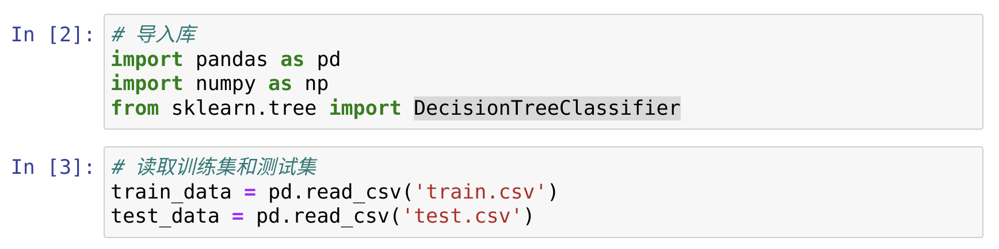
2.特征处理
我们先来看一下训练集长什么样：
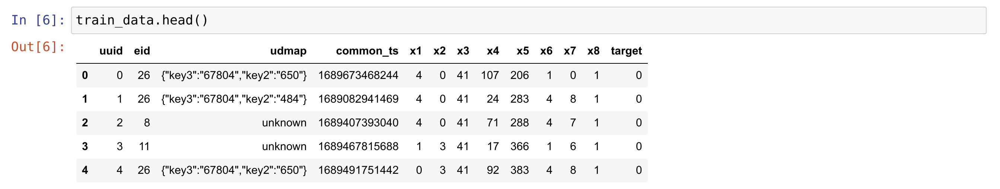
可以看出训练集中有12个特征和一个预测目标，但显然不可以把这样的数据集直接扔给决策树，因为决策树数处理不了非数值型的特征，同时有些特征并不能放入模型中去，还有就是一些特征中存在缺失值。因此特征的处理在机器学习中尤为重要，那我们开始吧。
首先我们对udmap特征进行处理，从数据中我们可以看出该特征存在key1-key9关键字，并存在一些缺失值。我们可以这样把这9个关键字拆开来，成为9个新的关键字，对于缺失值，用0来填充。
代码如下：
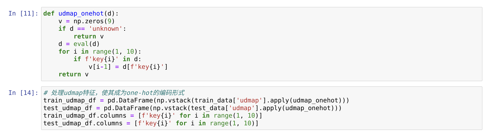
我们来分析一下代码，首先是这个udmap_onehot函数，它首先创建了一个包含9个元素值为0的一维数组变量v，如果为缺失值则直接返回v; 反之，如果对应的key存在，则给对应的元素赋对应的值，最后返回v。然后，我们对训练集和测试集的udmap特征应用udmap_onehot。这里用到了pandas中的apply函数，它帮我们对每个数据进行了指定的函数操作。
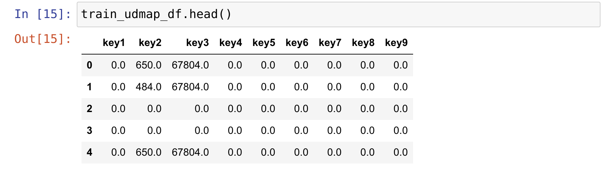
上图展示了处理后的udmap特征的新形式。
最后就是将数据集和编码后的udmap按列合并。这里用到了pandas中的concat函数，其作用就是按指定维度拼接。
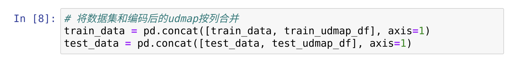
处理时间戳。我们可以从时间戳中提取出用户使用产品的具体时间。baseline中只提取出了小时的特征。
具体代码如下：
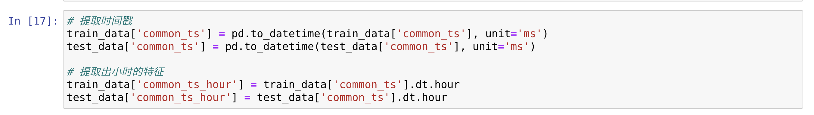
添加新特征。从已存在的特征中可以创造出新的特征，像我们可以生成新特征 udmap_isunknown, 如果udmap的值为unknown，则为1；否则为0等等。
代码的详细实现过程就不在赘述。
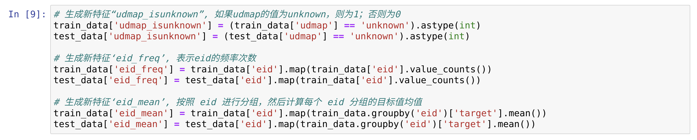
哦，突然想起来了，在分析baseline代码的时候，我对eid_freq和eid_mean对于test_data的实现感到奇怪，为什么test_data的处理要使用train_data的数据，后来明白了当测试集中的eid和训练集中的eid相同时，测试集的eid的频率次数和均值当然要和训练集的一样啊。
模型训练和预测
其实有sklearn给我们准备的模型让模型的训练和预测变得十分的简单。baseline采用了决策树模型。在扔入训练集的时候我们扔掉了’udmap’,’common_ts’, ‘uuid’这些特征，因为有些特征已经被我们处理过了形成了新的特征，像udmap、common_ts，还有些特征就不应该放入，比如uuid，它并没有什么特别的含义。
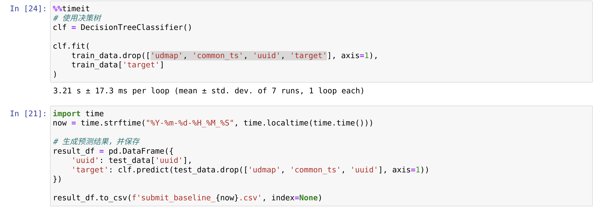
最后看一下我得到的分数吧
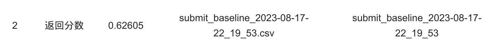
baseline的一些改进
我这次主要是选择新的模型来跑这个数据集，对于一些有关特征处理的内容，我会放到任务二中去详细的阐述。这里先声明一下。
既然用了决策树，那就不得不尝试一下随机森林了。由于前面特征处理的代码和前面的一样，我就直接展示模型部分了。
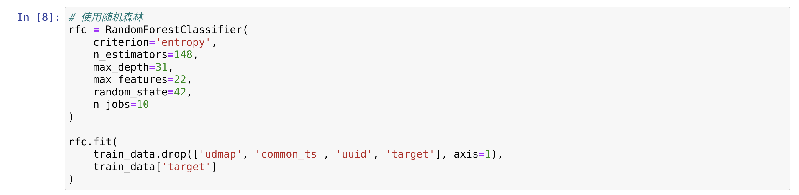
关于模型内的参数可以参考官网给出的详细解释和例子。我使用了学习率曲线和网格搜索得出了最优的参数，但注意消耗的时间，我大概跑了接近一天吧。最后的参数用交叉验证（cv=10）跑一次大概要10分钟左右吧。
看看分数是否有提高：
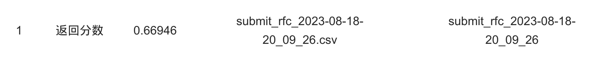
确实提高了一点，但还有很多工作可以做。
任务一到这里就结束了。
tips：其实有很多库的函数和参数都可以在官网找到，而且还会有一些例子帮助理解。我们大可以到这些地方去看看是否可以解决自己的疑惑，不用怕英文，我们有翻译，文中提到的库我都放了官网的链接。